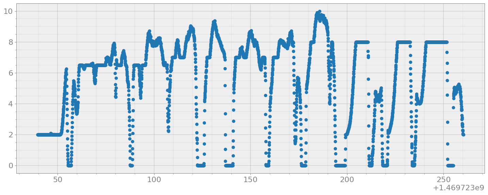
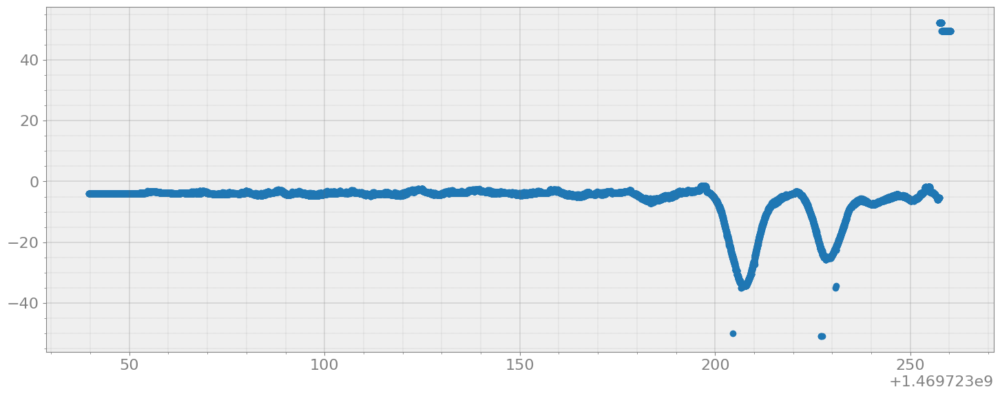
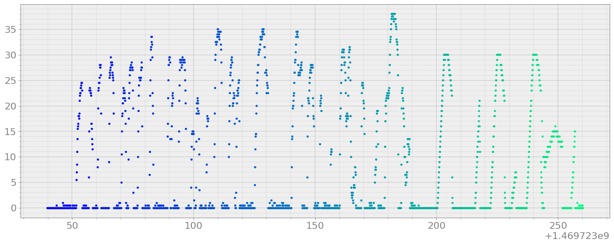
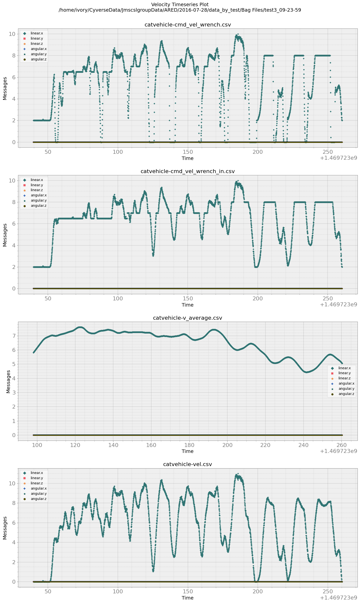
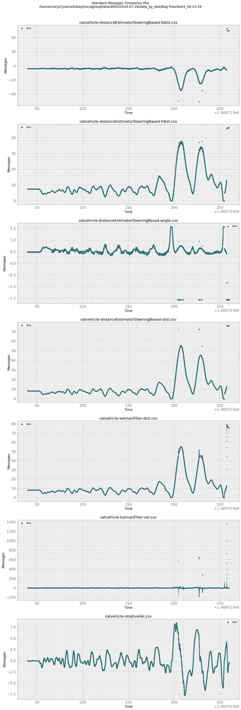
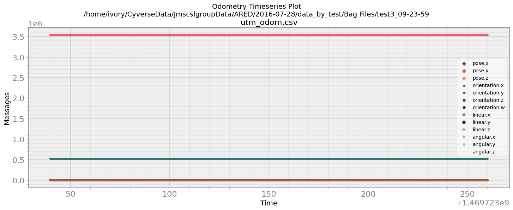

bagreader example¶
[1]:
import bagpy
from bagpy import bagreader
import pandas as pd
import seaborn as sea
import matplotlib.pyplot as plt
import numpy as np
Failed to load Python extension for LZ4 support. LZ4 compression will not be available.
[2]:
b = bagreader('/home/ivory/CyverseData/JmscslgroupData/ARED/2016-07-28/data_by_test/Bag Files/test3_09-23-59.bag')
#b = bagreader('/home/ivory/CyverseData/ProjectSparkle/catvehicle_n_1_update_rate_100.0_max_update_rate_100.0_time_step_0.01_logtime_20.0_2020-03-04-21-14-22.bag')
[INFO] Data folder /home/ivory/CyverseData/JmscslgroupData/ARED/2016-07-28/data_by_test/Bag Files/test3_09-23-59 already exists. Not creating.
[3]:
b.topic_table
[3]:
| Topics | Types | Message Count | Frequency | |
|---|---|---|---|---|
| 0 | /catvehicle/accelerator | geometry_msgs/Wrench | 4410 | 19.853096 |
| 1 | /catvehicle/brake | geometry_msgs/Wrench | 4410 | 19.871249 |
| 2 | /catvehicle/cmd_vel_wrench | geometry_msgs/Twist | 4417 | 20.013857 |
| 3 | /catvehicle/cmd_vel_wrench_in | geometry_msgs/Twist | 4417 | 20.009083 |
| 4 | /catvehicle/cmd_wrench | geometry_msgs/Wrench | 8544 | 243.218556 |
| 5 | /catvehicle/distanceEstimatorSteeringBased/Xdist | std_msgs/Float32 | 16542 | 76.594302 |
| 6 | /catvehicle/distanceEstimatorSteeringBased/Ydist | std_msgs/Float32 | 16540 | 76.581716 |
| 7 | /catvehicle/distanceEstimatorSteeringBased/angle | std_msgs/Float32 | 16540 | 76.569134 |
| 8 | /catvehicle/distanceEstimatorSteeringBased/dist | std_msgs/Float32 | 16532 | 76.588708 |
| 9 | /catvehicle/front_laser_points | sensor_msgs/LaserScan | 16533 | 75.347681 |
| 10 | /catvehicle/kalmanFilter/dist | std_msgs/Float32 | 16088 | 74.997389 |
| 11 | /catvehicle/kalmanFilter/vel | std_msgs/Float32 | 16081 | 74.994707 |
| 12 | /catvehicle/relativeVel | std_msgs/Float32 | 16088 | 76.613890 |
| 13 | /catvehicle/steering | geometry_msgs/Wrench | 4410 | 19.852532 |
| 14 | /catvehicle/v_average | geometry_msgs/Twist | 12172 | 75.009460 |
| 15 | /catvehicle/vel | geometry_msgs/Twist | 4415 | 19.908458 |
| 16 | /catvehicle/velocity | rosjaus/ReportVelocityState | 4415 | 19.909639 |
| 17 | /catvehicle/wrenchEffort | rosjaus/ReportWrenchEffort | 4410 | 19.772981 |
| 18 | /diagnostics | diagnostic_msgs/DiagnosticArray | 219 | 0.998563 |
| 19 | /gps_fix | sensor_msgs/NavSatFix | 2208 | 10.026952 |
| 20 | /rosout | rosgraph_msgs/Log | 171 | 71.809822 |
| 21 | /rosout_agg | rosgraph_msgs/Log | 172 | 72.531931 |
| 22 | /utm_odom | nav_msgs/Odometry | 2208 | 10.026185 |
Decoding message by topic¶
[4]:
LASER_MSG = b.message_by_topic('/catvehicle/front_laser_points')
LASER_MSG
df_laser = pd.read_csv(LASER_MSG)
df_laser
[4]:
| Time | header.seq | header.stamp.secs | header.stamp.nsecs | header.frame_id | angle_min | angle_max | angle_increment | time_increment | scan_time | ... | ranges_171 | ranges_172 | ranges_173 | ranges_174 | ranges_175 | ranges_176 | ranges_177 | ranges_178 | ranges_179 | ranges_180 | |
|---|---|---|---|---|---|---|---|---|---|---|---|---|---|---|---|---|---|---|---|---|---|
| 0 | 1.469723e+09 | 194171 | 1469722837 | 367127654 | laser | -1.570796 | 1.570796 | 0.017453 | 0.000037 | 0.013333 | ... | NaN | NaN | NaN | NaN | NaN | NaN | NaN | NaN | NaN | NaN |
| 1 | 1.469723e+09 | 194172 | 1469722837 | 375891058 | laser | -1.562070 | 1.562070 | 0.017453 | 0.000037 | 0.013333 | ... | NaN | NaN | NaN | NaN | NaN | NaN | NaN | NaN | NaN | NaN |
| 2 | 1.469723e+09 | 194173 | 1469722837 | 389372660 | laser | -1.570796 | 1.570796 | 0.017453 | 0.000037 | 0.013333 | ... | NaN | NaN | NaN | NaN | NaN | NaN | NaN | NaN | NaN | NaN |
| 3 | 1.469723e+09 | 194174 | 1469722837 | 402498351 | laser | -1.562070 | 1.562070 | 0.017453 | 0.000037 | 0.013333 | ... | NaN | NaN | NaN | NaN | NaN | NaN | NaN | NaN | NaN | NaN |
| 4 | 1.469723e+09 | 194175 | 1469722837 | 416431406 | laser | -1.570796 | 1.570796 | 0.017453 | 0.000037 | 0.013333 | ... | NaN | NaN | NaN | NaN | NaN | NaN | NaN | NaN | NaN | NaN |
| ... | ... | ... | ... | ... | ... | ... | ... | ... | ... | ... | ... | ... | ... | ... | ... | ... | ... | ... | ... | ... | ... |
| 16528 | 1.469723e+09 | 210699 | 1469723057 | 790982616 | laser | -1.570796 | 1.570796 | 0.017453 | 0.000037 | 0.013333 | ... | NaN | NaN | NaN | 77.159996 | NaN | NaN | NaN | NaN | NaN | NaN |
| 16529 | 1.469723e+09 | 210700 | 1469723057 | 805517704 | laser | -1.562070 | 1.562070 | 0.017453 | 0.000037 | 0.013333 | ... | NaN | NaN | NaN | NaN | NaN | NaN | NaN | NaN | NaN | NaN |
| 16530 | 1.469723e+09 | 210701 | 1469723057 | 817511127 | laser | -1.570796 | 1.570796 | 0.017453 | 0.000037 | 0.013333 | ... | NaN | NaN | NaN | 77.259995 | NaN | NaN | NaN | NaN | NaN | NaN |
| 16531 | 1.469723e+09 | 210702 | 1469723057 | 829608754 | laser | -1.562070 | 1.562070 | 0.017453 | 0.000037 | 0.013333 | ... | NaN | NaN | NaN | NaN | NaN | NaN | NaN | NaN | NaN | NaN |
| 16532 | 1.469723e+09 | 210703 | 1469723057 | 844000527 | laser | -1.570796 | 1.570796 | 0.017453 | 0.000037 | 0.013333 | ... | NaN | NaN | NaN | NaN | NaN | NaN | NaN | NaN | NaN | NaN |
16533 rows × 193 columns
Access some attributres of bagreader object¶
[5]:
b.bagfile
[5]:
'/home/ivory/CyverseData/JmscslgroupData/ARED/2016-07-28/data_by_test/Bag Files/test3_09-23-59.bag'
[6]:
b.datafolder
[6]:
'/home/ivory/CyverseData/JmscslgroupData/ARED/2016-07-28/data_by_test/Bag Files/test3_09-23-59'
[7]:
b.dir
[7]:
'/home/ivory/CyverseData/JmscslgroupData/ARED/2016-07-28/data_by_test/Bag Files'
[8]:
b.start_time
[8]:
1469723039.6560647
[9]:
b.filename
[9]:
'/test3_09-23-59.bag'
[10]:
b.frequency
[10]:
[19.853095845541425,
19.871248945867325,
20.01385694517345,
20.00908310275737,
243.21855610321833,
76.59430241051862,
76.58171593419635,
76.56913359377853,
76.58870791030604,
75.34768081054862,
74.99738940743124,
74.99470748104706,
76.61388959924012,
19.85253203201545,
75.00946045031029,
19.908458108169043,
19.909639383481988,
19.77298077059065,
0.998563330074469,
10.026951755067499,
71.80982220053588,
72.53193145070642,
10.026184756236031]
Decoding specialized messages¶
[11]:
csv = b.laser_data()
[12]:
csv
[12]:
['/home/ivory/CyverseData/JmscslgroupData/ARED/2016-07-28/data_by_test/Bag Files/test3_09-23-59/catvehicle-front_laser_points.csv']
[13]:
df = pd.read_csv(csv[0])
[14]:
df
[14]:
| Time | header.seq | header.frame_id | angle_min | angle_max | angle_increment | time_increment | scan_time | range_min | range_max | ... | intensities_172 | intensities_173 | intensities_174 | intensities_175 | intensities_176 | intensities_177 | intensities_178 | intensities_179 | intensities_180 | intensities_181 | |
|---|---|---|---|---|---|---|---|---|---|---|---|---|---|---|---|---|---|---|---|---|---|
| 0 | 1.469723e+09 | 194171 | laser | -1.570796 | 1.570796 | 0.017453 | 0.000037 | 0.013333 | 0.0 | 81.0 | ... | NaN | NaN | NaN | NaN | NaN | NaN | NaN | NaN | NaN | NaN |
| 1 | 1.469723e+09 | 194172 | laser | -1.562070 | 1.562070 | 0.017453 | 0.000037 | 0.013333 | 0.0 | 81.0 | ... | NaN | NaN | NaN | NaN | NaN | NaN | NaN | NaN | NaN | NaN |
| 2 | 1.469723e+09 | 194173 | laser | -1.570796 | 1.570796 | 0.017453 | 0.000037 | 0.013333 | 0.0 | 81.0 | ... | NaN | NaN | NaN | NaN | NaN | NaN | NaN | NaN | NaN | NaN |
| 3 | 1.469723e+09 | 194174 | laser | -1.562070 | 1.562070 | 0.017453 | 0.000037 | 0.013333 | 0.0 | 81.0 | ... | NaN | NaN | NaN | NaN | NaN | NaN | NaN | NaN | NaN | NaN |
| 4 | 1.469723e+09 | 194175 | laser | -1.570796 | 1.570796 | 0.017453 | 0.000037 | 0.013333 | 0.0 | 81.0 | ... | NaN | NaN | NaN | NaN | NaN | NaN | NaN | NaN | NaN | NaN |
| ... | ... | ... | ... | ... | ... | ... | ... | ... | ... | ... | ... | ... | ... | ... | ... | ... | ... | ... | ... | ... | ... |
| 16528 | 1.469723e+09 | 210699 | laser | -1.570796 | 1.570796 | 0.017453 | 0.000037 | 0.013333 | 0.0 | 81.0 | ... | NaN | NaN | NaN | NaN | NaN | NaN | NaN | NaN | NaN | NaN |
| 16529 | 1.469723e+09 | 210700 | laser | -1.562070 | 1.562070 | 0.017453 | 0.000037 | 0.013333 | 0.0 | 81.0 | ... | NaN | NaN | NaN | NaN | NaN | NaN | NaN | NaN | NaN | NaN |
| 16530 | 1.469723e+09 | 210701 | laser | -1.570796 | 1.570796 | 0.017453 | 0.000037 | 0.013333 | 0.0 | 81.0 | ... | NaN | NaN | NaN | NaN | NaN | NaN | NaN | NaN | NaN | NaN |
| 16531 | 1.469723e+09 | 210702 | laser | -1.562070 | 1.562070 | 0.017453 | 0.000037 | 0.013333 | 0.0 | 81.0 | ... | NaN | NaN | NaN | NaN | NaN | NaN | NaN | NaN | NaN | NaN |
| 16532 | 1.469723e+09 | 210703 | laser | -1.570796 | 1.570796 | 0.017453 | 0.000037 | 0.013333 | 0.0 | 81.0 | ... | NaN | NaN | NaN | NaN | NaN | NaN | NaN | NaN | NaN | NaN |
16533 rows × 374 columns
[15]:
ms = b.vel_data()
[16]:
vel = pd.read_csv(ms[0])
vel.columns.values[1:].tolist()
[16]:
['linear.x', 'linear.y', 'linear.z', 'angular.x', 'angular.y', 'angular.z']
[17]:
fig, ax = bagpy.create_fig(1)
ax[0].scatter(x='Time', y='linear.x', data=vel)
plt.show()

[18]:
s = b.std_data()
s
[18]:
['/home/ivory/CyverseData/JmscslgroupData/ARED/2016-07-28/data_by_test/Bag Files/test3_09-23-59/catvehicle-distanceEstimatorSteeringBased-Xdist.csv',
'/home/ivory/CyverseData/JmscslgroupData/ARED/2016-07-28/data_by_test/Bag Files/test3_09-23-59/catvehicle-distanceEstimatorSteeringBased-Ydist.csv',
'/home/ivory/CyverseData/JmscslgroupData/ARED/2016-07-28/data_by_test/Bag Files/test3_09-23-59/catvehicle-distanceEstimatorSteeringBased-angle.csv',
'/home/ivory/CyverseData/JmscslgroupData/ARED/2016-07-28/data_by_test/Bag Files/test3_09-23-59/catvehicle-distanceEstimatorSteeringBased-dist.csv',
'/home/ivory/CyverseData/JmscslgroupData/ARED/2016-07-28/data_by_test/Bag Files/test3_09-23-59/catvehicle-kalmanFilter-dist.csv',
'/home/ivory/CyverseData/JmscslgroupData/ARED/2016-07-28/data_by_test/Bag Files/test3_09-23-59/catvehicle-kalmanFilter-vel.csv',
'/home/ivory/CyverseData/JmscslgroupData/ARED/2016-07-28/data_by_test/Bag Files/test3_09-23-59/catvehicle-relativeVel.csv']
[19]:
data = pd.read_csv(s[0])
data
[19]:
| Time | data | |
|---|---|---|
| 0 | 1.469723e+09 | -3.981126 |
| 1 | 1.469723e+09 | -3.911019 |
| 2 | 1.469723e+09 | -3.981126 |
| 3 | 1.469723e+09 | -3.911019 |
| 4 | 1.469723e+09 | -3.981126 |
| ... | ... | ... |
| 16537 | 1.469723e+09 | 49.651566 |
| 16538 | 1.469723e+09 | 49.651566 |
| 16539 | 1.469723e+09 | 49.651566 |
| 16540 | 1.469723e+09 | 49.651566 |
| 16541 | 1.469723e+09 | 49.651566 |
16542 rows × 2 columns
[20]:
fig, ax = bagpy.create_fig(1)
ax[0].scatter(x='Time', y='data', data=data)
plt.show()

[21]:
odom = b.odometry_data()
[22]:
odom
[22]:
['/home/ivory/CyverseData/JmscslgroupData/ARED/2016-07-28/data_by_test/Bag Files/test3_09-23-59/utm_odom.csv']
[23]:
odomdata = pd.read_csv(odom[0])
odomdata
[23]:
| Time | header.seq | header.frame_id | child_frame_id | pose.x | pose.y | pose.z | orientation.x | orientation.y | orientation.z | orientation.w | linear.x | linear.y | linear.z | angular.x | angular.y | angular.z | |
|---|---|---|---|---|---|---|---|---|---|---|---|---|---|---|---|---|---|
| 0 | 1.469723e+09 | 25706 | /odom | base_link | 521088.765790 | 3.544660e+06 | 848.639873 | -0.000943 | -0.032431 | -0.804456 | 0.593126 | 19.846116 | -11.671198 | -47.783898 | NaN | NaN | NaN |
| 1 | 1.469723e+09 | 25707 | /odom | base_link | 521090.751534 | 3.544659e+06 | 843.861952 | -0.000932 | -0.032423 | -0.804407 | 0.593192 | 19.841832 | -11.671902 | -47.774513 | NaN | NaN | NaN |
| 2 | 1.469723e+09 | 25708 | /odom | base_link | 521092.736826 | 3.544658e+06 | 839.084958 | -0.000939 | -0.032406 | -0.804359 | 0.593258 | 19.836787 | -11.671519 | -47.765269 | NaN | NaN | NaN |
| 3 | 1.469723e+09 | 25709 | /odom | base_link | 521094.721493 | 3.544657e+06 | 834.308853 | -0.000944 | -0.032409 | -0.804309 | 0.593326 | 19.828732 | -11.669034 | -47.756617 | NaN | NaN | NaN |
| 4 | 1.469723e+09 | 25710 | /odom | base_link | 521096.705249 | 3.544656e+06 | 829.534247 | -0.000899 | -0.032459 | -0.804251 | 0.593402 | 19.819867 | -11.668892 | -47.732853 | NaN | NaN | NaN |
| ... | ... | ... | ... | ... | ... | ... | ... | ... | ... | ... | ... | ... | ... | ... | ... | ... | ... |
| 2203 | 1.469723e+09 | 27909 | /odom | base_link | 521126.123091 | 3.544633e+06 | 894.859256 | 0.004519 | 0.015634 | 0.669521 | 0.742615 | -0.041453 | -3.003249 | -4.151045 | NaN | NaN | NaN |
| 2204 | 1.469723e+09 | 27910 | /odom | base_link | 521126.118493 | 3.544633e+06 | 894.441065 | 0.004687 | 0.015650 | 0.669428 | 0.742697 | -0.062772 | -3.271563 | -4.212904 | NaN | NaN | NaN |
| 2205 | 1.469723e+09 | 27911 | /odom | base_link | 521126.319818 | 3.544633e+06 | 894.265923 | 0.005385 | 0.015334 | 0.673498 | 0.739011 | 0.012628 | -3.442711 | -4.229531 | NaN | NaN | NaN |
| 2206 | 1.469723e+09 | 27912 | /odom | base_link | 521126.320924 | 3.544633e+06 | 893.839976 | 0.005082 | 0.015623 | 0.673612 | 0.738902 | -0.004563 | -3.667120 | -4.289068 | NaN | NaN | NaN |
| 2207 | 1.469723e+09 | 27913 | /odom | base_link | 521126.321076 | 3.544632e+06 | 893.408258 | 0.004067 | 0.016343 | 0.673653 | 0.738856 | -0.003253 | -3.686714 | -4.344619 | NaN | NaN | NaN |
2208 rows × 17 columns
[24]:
w = b.wrench_data()
w
[24]:
['/home/ivory/CyverseData/JmscslgroupData/ARED/2016-07-28/data_by_test/Bag Files/test3_09-23-59/catvehicle-accelerator.csv',
'/home/ivory/CyverseData/JmscslgroupData/ARED/2016-07-28/data_by_test/Bag Files/test3_09-23-59/catvehicle-brake.csv',
'/home/ivory/CyverseData/JmscslgroupData/ARED/2016-07-28/data_by_test/Bag Files/test3_09-23-59/catvehicle-cmd_wrench.csv',
'/home/ivory/CyverseData/JmscslgroupData/ARED/2016-07-28/data_by_test/Bag Files/test3_09-23-59/catvehicle-steering.csv']
[25]:
wdata = pd.read_csv(w[0])
wdata
[25]:
| Time | force.x | force.y | force.z | torque.x | torque.y | torque.z | |
|---|---|---|---|---|---|---|---|
| 0 | 1.469723e+09 | 0.000000 | 0.0 | 0.0 | 0.0 | 0.0 | 0.0 |
| 1 | 1.469723e+09 | 0.000000 | 0.0 | 0.0 | 0.0 | 0.0 | 0.0 |
| 2 | 1.469723e+09 | 0.000000 | 0.0 | 0.0 | 0.0 | 0.0 | 0.0 |
| 3 | 1.469723e+09 | 0.000000 | 0.0 | 0.0 | 0.0 | 0.0 | 0.0 |
| 4 | 1.469723e+09 | 0.000000 | 0.0 | 0.0 | 0.0 | 0.0 | 0.0 |
| ... | ... | ... | ... | ... | ... | ... | ... |
| 4405 | 1.469723e+09 | 0.000000 | 0.0 | 0.0 | 0.0 | 0.0 | 0.0 |
| 4406 | 1.469723e+09 | 0.000000 | 0.0 | 0.0 | 0.0 | 0.0 | 0.0 |
| 4407 | 1.469723e+09 | 0.500504 | 0.0 | 0.0 | 0.0 | 0.0 | 0.0 |
| 4408 | 1.469723e+09 | 0.000000 | 0.0 | 0.0 | 0.0 | 0.0 | 0.0 |
| 4409 | 1.469723e+09 | 0.000000 | 0.0 | 0.0 | 0.0 | 0.0 | 0.0 |
4410 rows × 7 columns
[26]:
fig, ax = bagpy.create_fig(1)
ax[0].scatter(x='Time', y='force.x', data=wdata, s= 6, c = 'Time', cmap = "winter")
plt.show()

Just visualization¶
[27]:
b.plot_vel(save_fig=True)

[28]:
b.plot_std()

[29]:
b.plot_odometry()

[30]:
b.plot_wrench()

Animate a timeseries in real-time¶
It may take a while to finish executing
[ ]:
bagpy.animate_timeseries(vel['Time'], vel['linear.x'], title='Velocity Timeseries Plot')
[ ]:
Decode all the available topics¶
[50]:
csvfiles = []
for t in b.topics:
data = b.message_by_topic(t)
csvfiles.append(data)
[51]:
csvfiles
[51]:
['/home/ivory/CyverseData/JmscslgroupData/ARED/2016-07-28/data_by_test/Bag Files/test3_09-23-59/catvehicle-accelerator.csv',
'/home/ivory/CyverseData/JmscslgroupData/ARED/2016-07-28/data_by_test/Bag Files/test3_09-23-59/catvehicle-brake.csv',
'/home/ivory/CyverseData/JmscslgroupData/ARED/2016-07-28/data_by_test/Bag Files/test3_09-23-59/catvehicle-cmd_vel_wrench.csv',
'/home/ivory/CyverseData/JmscslgroupData/ARED/2016-07-28/data_by_test/Bag Files/test3_09-23-59/catvehicle-cmd_vel_wrench_in.csv',
'/home/ivory/CyverseData/JmscslgroupData/ARED/2016-07-28/data_by_test/Bag Files/test3_09-23-59/catvehicle-cmd_wrench.csv',
'/home/ivory/CyverseData/JmscslgroupData/ARED/2016-07-28/data_by_test/Bag Files/test3_09-23-59/catvehicle-distanceEstimatorSteeringBased-Xdist.csv',
'/home/ivory/CyverseData/JmscslgroupData/ARED/2016-07-28/data_by_test/Bag Files/test3_09-23-59/catvehicle-distanceEstimatorSteeringBased-Ydist.csv',
'/home/ivory/CyverseData/JmscslgroupData/ARED/2016-07-28/data_by_test/Bag Files/test3_09-23-59/catvehicle-distanceEstimatorSteeringBased-angle.csv',
'/home/ivory/CyverseData/JmscslgroupData/ARED/2016-07-28/data_by_test/Bag Files/test3_09-23-59/catvehicle-distanceEstimatorSteeringBased-dist.csv',
'/home/ivory/CyverseData/JmscslgroupData/ARED/2016-07-28/data_by_test/Bag Files/test3_09-23-59/catvehicle-front_laser_points.csv',
'/home/ivory/CyverseData/JmscslgroupData/ARED/2016-07-28/data_by_test/Bag Files/test3_09-23-59/catvehicle-kalmanFilter-dist.csv',
'/home/ivory/CyverseData/JmscslgroupData/ARED/2016-07-28/data_by_test/Bag Files/test3_09-23-59/catvehicle-kalmanFilter-vel.csv',
'/home/ivory/CyverseData/JmscslgroupData/ARED/2016-07-28/data_by_test/Bag Files/test3_09-23-59/catvehicle-relativeVel.csv',
'/home/ivory/CyverseData/JmscslgroupData/ARED/2016-07-28/data_by_test/Bag Files/test3_09-23-59/catvehicle-steering.csv',
'/home/ivory/CyverseData/JmscslgroupData/ARED/2016-07-28/data_by_test/Bag Files/test3_09-23-59/catvehicle-v_average.csv',
'/home/ivory/CyverseData/JmscslgroupData/ARED/2016-07-28/data_by_test/Bag Files/test3_09-23-59/catvehicle-vel.csv',
'/home/ivory/CyverseData/JmscslgroupData/ARED/2016-07-28/data_by_test/Bag Files/test3_09-23-59/catvehicle-velocity.csv',
'/home/ivory/CyverseData/JmscslgroupData/ARED/2016-07-28/data_by_test/Bag Files/test3_09-23-59/catvehicle-wrenchEffort.csv',
'/home/ivory/CyverseData/JmscslgroupData/ARED/2016-07-28/data_by_test/Bag Files/test3_09-23-59/diagnostics.csv',
'/home/ivory/CyverseData/JmscslgroupData/ARED/2016-07-28/data_by_test/Bag Files/test3_09-23-59/gps_fix.csv',
'/home/ivory/CyverseData/JmscslgroupData/ARED/2016-07-28/data_by_test/Bag Files/test3_09-23-59/rosout.csv',
'/home/ivory/CyverseData/JmscslgroupData/ARED/2016-07-28/data_by_test/Bag Files/test3_09-23-59/rosout_agg.csv',
'/home/ivory/CyverseData/JmscslgroupData/ARED/2016-07-28/data_by_test/Bag Files/test3_09-23-59/utm_odom.csv']
[52]:
print(csvfiles[0])
data = pd.read_csv(csvfiles[0])
data
/home/ivory/CyverseData/JmscslgroupData/ARED/2016-07-28/data_by_test/Bag Files/test3_09-23-59/catvehicle-accelerator.csv
[52]:
| Time | force.x | force.y | force.z | torque.x | torque.y | torque.z | |
|---|---|---|---|---|---|---|---|
| 0 | 1.469723e+09 | 0.000000 | 0.0 | 0.0 | 0.0 | 0.0 | 0.0 |
| 1 | 1.469723e+09 | 0.000000 | 0.0 | 0.0 | 0.0 | 0.0 | 0.0 |
| 2 | 1.469723e+09 | 0.000000 | 0.0 | 0.0 | 0.0 | 0.0 | 0.0 |
| 3 | 1.469723e+09 | 0.000000 | 0.0 | 0.0 | 0.0 | 0.0 | 0.0 |
| 4 | 1.469723e+09 | 0.000000 | 0.0 | 0.0 | 0.0 | 0.0 | 0.0 |
| ... | ... | ... | ... | ... | ... | ... | ... |
| 4405 | 1.469723e+09 | 0.000000 | 0.0 | 0.0 | 0.0 | 0.0 | 0.0 |
| 4406 | 1.469723e+09 | 0.000000 | 0.0 | 0.0 | 0.0 | 0.0 | 0.0 |
| 4407 | 1.469723e+09 | 0.500504 | 0.0 | 0.0 | 0.0 | 0.0 | 0.0 |
| 4408 | 1.469723e+09 | 0.000000 | 0.0 | 0.0 | 0.0 | 0.0 | 0.0 |
| 4409 | 1.469723e+09 | 0.000000 | 0.0 | 0.0 | 0.0 | 0.0 | 0.0 |
4410 rows × 7 columns
[53]:
print(csvfiles[1])
data = pd.read_csv(csvfiles[1])
data
/home/ivory/CyverseData/JmscslgroupData/ARED/2016-07-28/data_by_test/Bag Files/test3_09-23-59/catvehicle-brake.csv
[53]:
| Time | force.x | force.y | force.z | torque.x | torque.y | torque.z | |
|---|---|---|---|---|---|---|---|
| 0 | 1.469723e+09 | 0.000000 | 0.0 | 0.0 | 0.0 | 0.0 | 0.0 |
| 1 | 1.469723e+09 | 0.000000 | 0.0 | 0.0 | 0.0 | 0.0 | 0.0 |
| 2 | 1.469723e+09 | 0.000000 | 0.0 | 0.0 | 0.0 | 0.0 | 0.0 |
| 3 | 1.469723e+09 | 0.000000 | 0.0 | 0.0 | 0.0 | 0.0 | 0.0 |
| 4 | 1.469723e+09 | 0.000000 | 0.0 | 0.0 | 0.0 | 0.0 | 0.0 |
| ... | ... | ... | ... | ... | ... | ... | ... |
| 4405 | 1.469723e+09 | 8.627451 | 0.0 | 0.0 | 0.0 | 0.0 | 0.0 |
| 4406 | 1.469723e+09 | 8.627451 | 0.0 | 0.0 | 0.0 | 0.0 | 0.0 |
| 4407 | 1.469723e+09 | 8.627451 | 0.0 | 0.0 | 0.0 | 0.0 | 0.0 |
| 4408 | 1.469723e+09 | 8.235294 | 0.0 | 0.0 | 0.0 | 0.0 | 0.0 |
| 4409 | 1.469723e+09 | 8.235294 | 0.0 | 0.0 | 0.0 | 0.0 | 0.0 |
4410 rows × 7 columns
[54]:
print(csvfiles[2])
data = pd.read_csv(csvfiles[2])
data
/home/ivory/CyverseData/JmscslgroupData/ARED/2016-07-28/data_by_test/Bag Files/test3_09-23-59/catvehicle-cmd_vel_wrench.csv
[54]:
| Time | linear.x | linear.y | linear.z | angular.x | angular.y | angular.z | |
|---|---|---|---|---|---|---|---|
| 0 | 1.469723e+09 | 2.0000 | 0.0 | 0.0 | 0.0 | 0.0 | 0.0 |
| 1 | 1.469723e+09 | 2.0000 | 0.0 | 0.0 | 0.0 | 0.0 | 0.0 |
| 2 | 1.469723e+09 | 2.0000 | 0.0 | 0.0 | 0.0 | 0.0 | 0.0 |
| 3 | 1.469723e+09 | 2.0000 | 0.0 | 0.0 | 0.0 | 0.0 | 0.0 |
| 4 | 1.469723e+09 | 2.0000 | 0.0 | 0.0 | 0.0 | 0.0 | 0.0 |
| ... | ... | ... | ... | ... | ... | ... | ... |
| 4412 | 1.469723e+09 | 2.0154 | 0.0 | 0.0 | 0.0 | 0.0 | 0.0 |
| 4413 | 1.469723e+09 | 2.0000 | 0.0 | 0.0 | 0.0 | 0.0 | 0.0 |
| 4414 | 1.469723e+09 | 2.0220 | 0.0 | 0.0 | 0.0 | 0.0 | 0.0 |
| 4415 | 1.469723e+09 | 2.0264 | 0.0 | 0.0 | 0.0 | 0.0 | 0.0 |
| 4416 | 1.469723e+09 | 2.0044 | 0.0 | 0.0 | 0.0 | 0.0 | 0.0 |
4417 rows × 7 columns
[55]:
print(csvfiles[3])
data = pd.read_csv(csvfiles[3])
data
/home/ivory/CyverseData/JmscslgroupData/ARED/2016-07-28/data_by_test/Bag Files/test3_09-23-59/catvehicle-cmd_vel_wrench_in.csv
[55]:
| Time | linear.x | linear.y | linear.z | angular.x | angular.y | angular.z | |
|---|---|---|---|---|---|---|---|
| 0 | 1.469723e+09 | 2.0000 | 0.0 | 0.0 | 0.0 | 0.0 | 0.0 |
| 1 | 1.469723e+09 | 2.0000 | 0.0 | 0.0 | 0.0 | 0.0 | 0.0 |
| 2 | 1.469723e+09 | 2.0000 | 0.0 | 0.0 | 0.0 | 0.0 | 0.0 |
| 3 | 1.469723e+09 | 2.0000 | 0.0 | 0.0 | 0.0 | 0.0 | 0.0 |
| 4 | 1.469723e+09 | 2.0000 | 0.0 | 0.0 | 0.0 | 0.0 | 0.0 |
| ... | ... | ... | ... | ... | ... | ... | ... |
| 4412 | 1.469723e+09 | 2.0000 | 0.0 | 0.0 | 0.0 | 0.0 | 0.0 |
| 4413 | 1.469723e+09 | 2.0220 | 0.0 | 0.0 | 0.0 | 0.0 | 0.0 |
| 4414 | 1.469723e+09 | 2.0264 | 0.0 | 0.0 | 0.0 | 0.0 | 0.0 |
| 4415 | 1.469723e+09 | 2.0044 | 0.0 | 0.0 | 0.0 | 0.0 | 0.0 |
| 4416 | 1.469723e+09 | 2.0088 | 0.0 | 0.0 | 0.0 | 0.0 | 0.0 |
4417 rows × 7 columns
[56]:
print(csvfiles[4])
data = pd.read_csv(csvfiles[4])
data
/home/ivory/CyverseData/JmscslgroupData/ARED/2016-07-28/data_by_test/Bag Files/test3_09-23-59/catvehicle-cmd_wrench.csv
[56]:
| Time | force.x | force.y | force.z | torque.x | torque.y | torque.z | |
|---|---|---|---|---|---|---|---|
| 0 | 1.469723e+09 | 17.469347 | 0.0 | 0.0 | 0.0 | 0.0 | 0.0 |
| 1 | 1.469723e+09 | 17.762125 | 0.0 | 0.0 | 0.0 | 0.0 | 0.0 |
| 2 | 1.469723e+09 | 17.859213 | 0.0 | 0.0 | 0.0 | 0.0 | 0.0 |
| 3 | 1.469723e+09 | 18.167694 | 0.0 | 0.0 | 0.0 | 0.0 | 0.0 |
| 4 | 1.469723e+09 | 18.270097 | 0.0 | 0.0 | 0.0 | 0.0 | 0.0 |
| ... | ... | ... | ... | ... | ... | ... | ... |
| 8539 | 1.469723e+09 | 30.000000 | 0.0 | 0.0 | 0.0 | 0.0 | 0.0 |
| 8540 | 1.469723e+09 | 30.000000 | 0.0 | 0.0 | 0.0 | 0.0 | 0.0 |
| 8541 | 1.469723e+09 | 30.000000 | 0.0 | 0.0 | 0.0 | 0.0 | 0.0 |
| 8542 | 1.469723e+09 | 30.000000 | 0.0 | 0.0 | 0.0 | 0.0 | 0.0 |
| 8543 | 1.469723e+09 | 30.000000 | 0.0 | 0.0 | 0.0 | 0.0 | 0.0 |
8544 rows × 7 columns
[57]:
print(csvfiles[5])
data = pd.read_csv(csvfiles[5])
data
/home/ivory/CyverseData/JmscslgroupData/ARED/2016-07-28/data_by_test/Bag Files/test3_09-23-59/catvehicle-distanceEstimatorSteeringBased-Xdist.csv
[57]:
| Time | data | |
|---|---|---|
| 0 | 1.469723e+09 | -3.981126 |
| 1 | 1.469723e+09 | -3.911019 |
| 2 | 1.469723e+09 | -3.981126 |
| 3 | 1.469723e+09 | -3.911019 |
| 4 | 1.469723e+09 | -3.981126 |
| ... | ... | ... |
| 16537 | 1.469723e+09 | 49.651566 |
| 16538 | 1.469723e+09 | 49.651566 |
| 16539 | 1.469723e+09 | 49.651566 |
| 16540 | 1.469723e+09 | 49.651566 |
| 16541 | 1.469723e+09 | 49.651566 |
16542 rows × 2 columns
[58]:
print(csvfiles[6])
data = pd.read_csv(csvfiles[6])
data
/home/ivory/CyverseData/JmscslgroupData/ARED/2016-07-28/data_by_test/Bag Files/test3_09-23-59/catvehicle-distanceEstimatorSteeringBased-Ydist.csv
[58]:
| Time | data | |
|---|---|---|
| 0 | 1.469723e+09 | 7.487391 |
| 1 | 1.469723e+09 | 7.512978 |
| 2 | 1.469723e+09 | 7.487391 |
| 3 | 1.469723e+09 | 7.512978 |
| 4 | 1.469723e+09 | 7.487391 |
| ... | ... | ... |
| 16535 | 1.469723e+09 | 46.300911 |
| 16536 | 1.469723e+09 | 46.300911 |
| 16537 | 1.469723e+09 | 46.300911 |
| 16538 | 1.469723e+09 | 46.300911 |
| 16539 | 1.469723e+09 | 46.300911 |
16540 rows × 2 columns
[59]:
print(csvfiles[7])
data = pd.read_csv(csvfiles[7])
data
/home/ivory/CyverseData/JmscslgroupData/ARED/2016-07-28/data_by_test/Bag Files/test3_09-23-59/catvehicle-distanceEstimatorSteeringBased-angle.csv
[59]:
| Time | data | |
|---|---|---|
| 0 | 1.469723e+09 | 0.488693 |
| 1 | 1.469723e+09 | 0.479967 |
| 2 | 1.469723e+09 | 0.488693 |
| 3 | 1.469723e+09 | 0.479967 |
| 4 | 1.469723e+09 | 0.488693 |
| ... | ... | ... |
| 16535 | 1.469723e+09 | -1.562070 |
| 16536 | 1.469723e+09 | -1.570796 |
| 16537 | 1.469723e+09 | -1.562070 |
| 16538 | 1.469723e+09 | -1.570796 |
| 16539 | 1.469723e+09 | -1.562070 |
16540 rows × 2 columns
[60]:
print(csvfiles[8])
data = pd.read_csv(csvfiles[8])
data
/home/ivory/CyverseData/JmscslgroupData/ARED/2016-07-28/data_by_test/Bag Files/test3_09-23-59/catvehicle-distanceEstimatorSteeringBased-dist.csv
[60]:
| Time | data | |
|---|---|---|
| 0 | 1.469723e+09 | 8.184999 |
| 1 | 1.469723e+09 | 8.196764 |
| 2 | 1.469723e+09 | 8.195429 |
| 3 | 1.469723e+09 | 8.196764 |
| 4 | 1.469723e+09 | 8.184999 |
| ... | ... | ... |
| 16527 | 1.469723e+09 | 75.795120 |
| 16528 | 1.469723e+09 | 75.795120 |
| 16529 | 1.469723e+09 | 75.795120 |
| 16530 | 1.469723e+09 | 75.795120 |
| 16531 | 1.469723e+09 | 75.795120 |
16532 rows × 2 columns
[61]:
print(csvfiles[9])
data = pd.read_csv(csvfiles[9])
data
/home/ivory/CyverseData/JmscslgroupData/ARED/2016-07-28/data_by_test/Bag Files/test3_09-23-59/catvehicle-front_laser_points.csv
[61]:
| Time | header.seq | header.stamp.secs | header.stamp.nsecs | header.frame_id | angle_min | angle_max | angle_increment | time_increment | scan_time | ... | ranges_171 | ranges_172 | ranges_173 | ranges_174 | ranges_175 | ranges_176 | ranges_177 | ranges_178 | ranges_179 | ranges_180 | |
|---|---|---|---|---|---|---|---|---|---|---|---|---|---|---|---|---|---|---|---|---|---|
| 0 | 1.469723e+09 | 194171 | 1469722837 | 367127654 | laser | -1.570796 | 1.570796 | 0.017453 | 0.000037 | 0.013333 | ... | NaN | NaN | NaN | NaN | NaN | NaN | NaN | NaN | NaN | NaN |
| 1 | 1.469723e+09 | 194172 | 1469722837 | 375891058 | laser | -1.562070 | 1.562070 | 0.017453 | 0.000037 | 0.013333 | ... | NaN | NaN | NaN | NaN | NaN | NaN | NaN | NaN | NaN | NaN |
| 2 | 1.469723e+09 | 194173 | 1469722837 | 389372660 | laser | -1.570796 | 1.570796 | 0.017453 | 0.000037 | 0.013333 | ... | NaN | NaN | NaN | NaN | NaN | NaN | NaN | NaN | NaN | NaN |
| 3 | 1.469723e+09 | 194174 | 1469722837 | 402498351 | laser | -1.562070 | 1.562070 | 0.017453 | 0.000037 | 0.013333 | ... | NaN | NaN | NaN | NaN | NaN | NaN | NaN | NaN | NaN | NaN |
| 4 | 1.469723e+09 | 194175 | 1469722837 | 416431406 | laser | -1.570796 | 1.570796 | 0.017453 | 0.000037 | 0.013333 | ... | NaN | NaN | NaN | NaN | NaN | NaN | NaN | NaN | NaN | NaN |
| ... | ... | ... | ... | ... | ... | ... | ... | ... | ... | ... | ... | ... | ... | ... | ... | ... | ... | ... | ... | ... | ... |
| 16528 | 1.469723e+09 | 210699 | 1469723057 | 790982616 | laser | -1.570796 | 1.570796 | 0.017453 | 0.000037 | 0.013333 | ... | NaN | NaN | NaN | 77.159996 | NaN | NaN | NaN | NaN | NaN | NaN |
| 16529 | 1.469723e+09 | 210700 | 1469723057 | 805517704 | laser | -1.562070 | 1.562070 | 0.017453 | 0.000037 | 0.013333 | ... | NaN | NaN | NaN | NaN | NaN | NaN | NaN | NaN | NaN | NaN |
| 16530 | 1.469723e+09 | 210701 | 1469723057 | 817511127 | laser | -1.570796 | 1.570796 | 0.017453 | 0.000037 | 0.013333 | ... | NaN | NaN | NaN | 77.259995 | NaN | NaN | NaN | NaN | NaN | NaN |
| 16531 | 1.469723e+09 | 210702 | 1469723057 | 829608754 | laser | -1.562070 | 1.562070 | 0.017453 | 0.000037 | 0.013333 | ... | NaN | NaN | NaN | NaN | NaN | NaN | NaN | NaN | NaN | NaN |
| 16532 | 1.469723e+09 | 210703 | 1469723057 | 844000527 | laser | -1.570796 | 1.570796 | 0.017453 | 0.000037 | 0.013333 | ... | NaN | NaN | NaN | NaN | NaN | NaN | NaN | NaN | NaN | NaN |
16533 rows × 193 columns
[62]:
print(csvfiles[10])
data = pd.read_csv(csvfiles[10])
data
/home/ivory/CyverseData/JmscslgroupData/ARED/2016-07-28/data_by_test/Bag Files/test3_09-23-59/catvehicle-kalmanFilter-dist.csv
[62]:
| Time | data | |
|---|---|---|
| 0 | 1.469723e+09 | 8.207202 |
| 1 | 1.469723e+09 | 8.207202 |
| 2 | 1.469723e+09 | 8.195429 |
| 3 | 1.469723e+09 | 8.207202 |
| 4 | 1.469723e+09 | 8.195429 |
| ... | ... | ... |
| 16083 | 1.469723e+09 | 75.640953 |
| 16084 | 1.469723e+09 | 75.640099 |
| 16085 | 1.469723e+09 | 75.639282 |
| 16086 | 1.469723e+09 | 75.638519 |
| 16087 | 1.469723e+09 | 75.637802 |
16088 rows × 2 columns
[63]:
print(csvfiles[11])
data = pd.read_csv(csvfiles[11])
data
/home/ivory/CyverseData/JmscslgroupData/ARED/2016-07-28/data_by_test/Bag Files/test3_09-23-59/catvehicle-kalmanFilter-vel.csv
[63]:
| Time | data | |
|---|---|---|
| 0 | 1.469723e+09 | -0.682425 |
| 1 | 1.469723e+09 | -0.882411 |
| 2 | 1.469723e+09 | 0.882411 |
| 3 | 1.469723e+09 | -0.100136 |
| 4 | 1.469723e+09 | 0.100136 |
| ... | ... | ... |
| 16076 | 1.469723e+09 | -0.067950 |
| 16077 | 1.469723e+09 | -0.064364 |
| 16078 | 1.469723e+09 | -0.060849 |
| 16079 | 1.469723e+09 | -0.057404 |
| 16080 | 1.469723e+09 | -0.054027 |
16081 rows × 2 columns
[64]:
print(csvfiles[12])
data = pd.read_csv(csvfiles[12])
data
/home/ivory/CyverseData/JmscslgroupData/ARED/2016-07-28/data_by_test/Bag Files/test3_09-23-59/catvehicle-relativeVel.csv
[64]:
| Time | data | |
|---|---|---|
| 0 | 1.469723e+09 | -2.846726e-18 |
| 1 | 1.469723e+09 | -2.846726e-18 |
| 2 | 1.469723e+09 | -1.132030e-02 |
| 3 | 1.469723e+09 | -2.846726e-18 |
| 4 | 1.469723e+09 | -1.132030e-02 |
| ... | ... | ... |
| 16083 | 1.469723e+09 | -3.013538e-01 |
| 16084 | 1.469723e+09 | -2.938051e-01 |
| 16085 | 1.469723e+09 | -2.863957e-01 |
| 16086 | 1.469723e+09 | -2.790965e-01 |
| 16087 | 1.469723e+09 | -2.719072e-01 |
16088 rows × 2 columns
[65]:
print(csvfiles[13])
data = pd.read_csv(csvfiles[13])
data
/home/ivory/CyverseData/JmscslgroupData/ARED/2016-07-28/data_by_test/Bag Files/test3_09-23-59/catvehicle-steering.csv
[65]:
| Time | force.x | force.y | force.z | torque.x | torque.y | torque.z | |
|---|---|---|---|---|---|---|---|
| 0 | 1.469723e+09 | 0.0 | 0.0 | 0.0 | 0.0 | 0.0 | -12.149419 |
| 1 | 1.469723e+09 | 0.0 | 0.0 | 0.0 | 0.0 | 0.0 | -12.149419 |
| 2 | 1.469723e+09 | 0.0 | 0.0 | 0.0 | 0.0 | 0.0 | -12.149419 |
| 3 | 1.469723e+09 | 0.0 | 0.0 | 0.0 | 0.0 | 0.0 | -12.149419 |
| 4 | 1.469723e+09 | 0.0 | 0.0 | 0.0 | 0.0 | 0.0 | -12.149419 |
| ... | ... | ... | ... | ... | ... | ... | ... |
| 4405 | 1.469723e+09 | 0.0 | 0.0 | 0.0 | 0.0 | 0.0 | 1.574755 |
| 4406 | 1.469723e+09 | 0.0 | 0.0 | 0.0 | 0.0 | 0.0 | 1.574755 |
| 4407 | 1.469723e+09 | 0.0 | 0.0 | 0.0 | 0.0 | 0.0 | 1.574755 |
| 4408 | 1.469723e+09 | 0.0 | 0.0 | 0.0 | 0.0 | 0.0 | 1.574755 |
| 4409 | 1.469723e+09 | 0.0 | 0.0 | 0.0 | 0.0 | 0.0 | 1.574755 |
4410 rows × 7 columns
[66]:
print(csvfiles[14])
data = pd.read_csv(csvfiles[14])
data
/home/ivory/CyverseData/JmscslgroupData/ARED/2016-07-28/data_by_test/Bag Files/test3_09-23-59/catvehicle-v_average.csv
[66]:
| Time | linear.x | linear.y | linear.z | angular.x | angular.y | angular.z | |
|---|---|---|---|---|---|---|---|
| 0 | 1.469723e+09 | 5.812315 | 0.0 | 0.0 | 0.0 | 0.0 | 0.0 |
| 1 | 1.469723e+09 | 5.814814 | 0.0 | 0.0 | 0.0 | 0.0 | 0.0 |
| 2 | 1.469723e+09 | 5.817313 | 0.0 | 0.0 | 0.0 | 0.0 | 0.0 |
| 3 | 1.469723e+09 | 5.819813 | 0.0 | 0.0 | 0.0 | 0.0 | 0.0 |
| 4 | 1.469723e+09 | 5.822301 | 0.0 | 0.0 | 0.0 | 0.0 | 0.0 |
| ... | ... | ... | ... | ... | ... | ... | ... |
| 12167 | 1.469723e+09 | 5.064435 | 0.0 | 0.0 | 0.0 | 0.0 | 0.0 |
| 12168 | 1.469723e+09 | 5.062345 | 0.0 | 0.0 | 0.0 | 0.0 | 0.0 |
| 12169 | 1.469723e+09 | 5.060263 | 0.0 | 0.0 | 0.0 | 0.0 | 0.0 |
| 12170 | 1.469723e+09 | 5.058181 | 0.0 | 0.0 | 0.0 | 0.0 | 0.0 |
| 12171 | 1.469723e+09 | 5.056099 | 0.0 | 0.0 | 0.0 | 0.0 | 0.0 |
12172 rows × 7 columns
[67]:
print(csvfiles[15])
data = pd.read_csv(csvfiles[15])
data
/home/ivory/CyverseData/JmscslgroupData/ARED/2016-07-28/data_by_test/Bag Files/test3_09-23-59/catvehicle-vel.csv
[67]:
| Time | linear.x | linear.y | linear.z | angular.x | angular.y | angular.z | |
|---|---|---|---|---|---|---|---|
| 0 | 1.469723e+09 | 0.0000 | 0.0 | 0.0 | 0.0 | 0.0 | 0.0 |
| 1 | 1.469723e+09 | 0.0000 | 0.0 | 0.0 | 0.0 | 0.0 | 0.0 |
| 2 | 1.469723e+09 | 0.0000 | 0.0 | 0.0 | 0.0 | 0.0 | 0.0 |
| 3 | 1.469723e+09 | 0.0000 | 0.0 | 0.0 | 0.0 | 0.0 | 0.0 |
| 4 | 1.469723e+09 | 0.0000 | 0.0 | 0.0 | 0.0 | 0.0 | 0.0 |
| ... | ... | ... | ... | ... | ... | ... | ... |
| 4410 | 1.469723e+09 | 0.0000 | 0.0 | 0.0 | 0.0 | 0.0 | 0.0 |
| 4411 | 1.469723e+09 | 0.0220 | 0.0 | 0.0 | 0.0 | 0.0 | 0.0 |
| 4412 | 1.469723e+09 | 0.0264 | 0.0 | 0.0 | 0.0 | 0.0 | 0.0 |
| 4413 | 1.469723e+09 | 0.0044 | 0.0 | 0.0 | 0.0 | 0.0 | 0.0 |
| 4414 | 1.469723e+09 | 0.0088 | 0.0 | 0.0 | 0.0 | 0.0 | 0.0 |
4415 rows × 7 columns
[68]:
print(csvfiles[16])
data = pd.read_csv(csvfiles[16])
data
/home/ivory/CyverseData/JmscslgroupData/ARED/2016-07-28/data_by_test/Bag Files/test3_09-23-59/catvehicle-velocity.csv
[68]:
| Time | velocityXMps | velocityYMps | velocityZMps | velocityRmsMps | rollRateRps | pitchRateRps | yawRateRps | rateRmsRps | |
|---|---|---|---|---|---|---|---|---|---|
| 0 | 1.469723e+09 | 0.0000 | inf | inf | inf | inf | inf | inf | inf |
| 1 | 1.469723e+09 | 0.0000 | inf | inf | inf | inf | inf | inf | inf |
| 2 | 1.469723e+09 | 0.0000 | inf | inf | inf | inf | inf | inf | inf |
| 3 | 1.469723e+09 | 0.0000 | inf | inf | inf | inf | inf | inf | inf |
| 4 | 1.469723e+09 | 0.0000 | inf | inf | inf | inf | inf | inf | inf |
| ... | ... | ... | ... | ... | ... | ... | ... | ... | ... |
| 4410 | 1.469723e+09 | 0.0000 | 0.0 | 0.0 | 0.0 | 0.0 | 0.0 | 0.0 | -1.985640e-42 |
| 4411 | 1.469723e+09 | 0.0220 | 0.0 | 0.0 | 0.0 | 0.0 | 0.0 | 0.0 | -1.985640e-42 |
| 4412 | 1.469723e+09 | 0.0264 | 0.0 | 0.0 | 0.0 | 0.0 | 0.0 | 0.0 | -1.985640e-42 |
| 4413 | 1.469723e+09 | 0.0044 | 0.0 | 0.0 | 0.0 | 0.0 | 0.0 | 0.0 | -1.985640e-42 |
| 4414 | 1.469723e+09 | 0.0088 | 0.0 | 0.0 | 0.0 | 0.0 | 0.0 | 0.0 | -1.985640e-42 |
4415 rows × 9 columns
[69]:
print(csvfiles[17])
data = pd.read_csv(csvfiles[17])
data
/home/ivory/CyverseData/JmscslgroupData/ARED/2016-07-28/data_by_test/Bag Files/test3_09-23-59/catvehicle-wrenchEffort.csv
[69]:
| Time | propulsiveLinearEffortXPercent | propulsiveRotationalEffortZPercent | resistiveLinearEffortXPercent | |
|---|---|---|---|---|
| 0 | 1.469723e+09 | 0 | -12 | 0 |
| 1 | 1.469723e+09 | 0 | -12 | 0 |
| 2 | 1.469723e+09 | 0 | -12 | 0 |
| 3 | 1.469723e+09 | 0 | -12 | 0 |
| 4 | 1.469723e+09 | 0 | -12 | 0 |
| ... | ... | ... | ... | ... |
| 4405 | 1.469723e+09 | 0 | 1 | 8 |
| 4406 | 1.469723e+09 | 0 | 1 | 8 |
| 4407 | 1.469723e+09 | 0 | 1 | 8 |
| 4408 | 1.469723e+09 | 0 | 1 | 8 |
| 4409 | 1.469723e+09 | 0 | 1 | 8 |
4410 rows × 4 columns
[70]:
print(csvfiles[18])
data = pd.read_csv(csvfiles[18])
data
/home/ivory/CyverseData/JmscslgroupData/ARED/2016-07-28/data_by_test/Bag Files/test3_09-23-59/diagnostics.csv
[70]:
| Time | header.seq | header.stamp.secs | header.stamp.nsecs | header.frame_id | status | |
|---|---|---|---|---|---|---|
| 0 | 1.469723e+09 | 2574 | 1469722837 | 489467401 | NaN | [level: 0\nname: "sicklms: /catvehicle/front_l... |
| 1 | 1.469723e+09 | 2575 | 1469722838 | 501308850 | NaN | [level: 0\nname: "sicklms: /catvehicle/front_l... |
| 2 | 1.469723e+09 | 2576 | 1469722839 | 501997206 | NaN | [level: 0\nname: "sicklms: /catvehicle/front_l... |
| 3 | 1.469723e+09 | 2577 | 1469722840 | 502716012 | NaN | [level: 0\nname: "sicklms: /catvehicle/front_l... |
| 4 | 1.469723e+09 | 2578 | 1469722841 | 503255746 | NaN | [level: 0\nname: "sicklms: /catvehicle/front_l... |
| ... | ... | ... | ... | ... | ... | ... |
| 214 | 1.469723e+09 | 2788 | 1469723052 | 849513695 | NaN | [level: 0\nname: "sicklms: /catvehicle/front_l... |
| 215 | 1.469723e+09 | 2789 | 1469723053 | 862420084 | NaN | [level: 0\nname: "sicklms: /catvehicle/front_l... |
| 216 | 1.469723e+09 | 2790 | 1469723054 | 865826662 | NaN | [level: 0\nname: "sicklms: /catvehicle/front_l... |
| 217 | 1.469723e+09 | 2791 | 1469723055 | 866525634 | NaN | [level: 0\nname: "sicklms: /catvehicle/front_l... |
| 218 | 1.469723e+09 | 2792 | 1469723056 | 876275476 | NaN | [level: 0\nname: "sicklms: /catvehicle/front_l... |
219 rows × 6 columns
[71]:
print(csvfiles[19])
data = pd.read_csv(csvfiles[19])
data
/home/ivory/CyverseData/JmscslgroupData/ARED/2016-07-28/data_by_test/Bag Files/test3_09-23-59/gps_fix.csv
[71]:
| Time | header.seq | header.stamp.secs | header.stamp.nsecs | header.frame_id | status.status | status.service | latitude | longitude | altitude | position_covariance_0 | position_covariance_1 | position_covariance_2 | position_covariance_3 | position_covariance_4 | position_covariance_5 | position_covariance_6 | position_covariance_7 | position_covariance_8 | position_covariance_type | |
|---|---|---|---|---|---|---|---|---|---|---|---|---|---|---|---|---|---|---|---|---|
| 0 | 1.469723e+09 | 25706 | 1469722837 | 138845744 | /odom | 0 | 1 | 32.037917 | -110.776641 | 848.639873 | 0.0 | 0.0 | 0.0 | 0.0 | 0.0 | 0.0 | 0.0 | 0.0 | 0.0 | 2 |
| 1 | 1.469723e+09 | 25707 | 1469722837 | 238293858 | /odom | 0 | 1 | 32.037907 | -110.776620 | 843.861952 | 0.0 | 0.0 | 0.0 | 0.0 | 0.0 | 0.0 | 0.0 | 0.0 | 0.0 | 2 |
| 2 | 1.469723e+09 | 25708 | 1469722837 | 337726608 | /odom | 0 | 1 | 32.037896 | -110.776599 | 839.084958 | 0.0 | 0.0 | 0.0 | 0.0 | 0.0 | 0.0 | 0.0 | 0.0 | 0.0 | 2 |
| 3 | 1.469723e+09 | 25709 | 1469722837 | 437419446 | /odom | 0 | 1 | 32.037886 | -110.776578 | 834.308853 | 0.0 | 0.0 | 0.0 | 0.0 | 0.0 | 0.0 | 0.0 | 0.0 | 0.0 | 2 |
| 4 | 1.469723e+09 | 25710 | 1469722837 | 537058366 | /odom | 0 | 1 | 32.037875 | -110.776557 | 829.534247 | 0.0 | 0.0 | 0.0 | 0.0 | 0.0 | 0.0 | 0.0 | 0.0 | 0.0 | 2 |
| ... | ... | ... | ... | ... | ... | ... | ... | ... | ... | ... | ... | ... | ... | ... | ... | ... | ... | ... | ... | ... |
| 2203 | 1.469723e+09 | 27909 | 1469723057 | 397306501 | /odom | -1 | 1 | 32.037673 | -110.776246 | 894.859256 | 0.0 | 0.0 | 0.0 | 0.0 | 0.0 | 0.0 | 0.0 | 0.0 | 0.0 | 2 |
| 2204 | 1.469723e+09 | 27910 | 1469723057 | 496265726 | /odom | -1 | 1 | 32.037670 | -110.776246 | 894.441065 | 0.0 | 0.0 | 0.0 | 0.0 | 0.0 | 0.0 | 0.0 | 0.0 | 0.0 | 2 |
| 2205 | 1.469723e+09 | 27911 | 1469723057 | 595299821 | /odom | -1 | 1 | 32.037669 | -110.776244 | 894.265923 | 0.0 | 0.0 | 0.0 | 0.0 | 0.0 | 0.0 | 0.0 | 0.0 | 0.0 | 2 |
| 2206 | 1.469723e+09 | 27912 | 1469723057 | 694586183 | /odom | -1 | 1 | 32.037666 | -110.776244 | 893.839976 | 0.0 | 0.0 | 0.0 | 0.0 | 0.0 | 0.0 | 0.0 | 0.0 | 0.0 | 2 |
| 2207 | 1.469723e+09 | 27913 | 1469723057 | 794838590 | /odom | -1 | 1 | 32.037663 | -110.776244 | 893.408258 | 0.0 | 0.0 | 0.0 | 0.0 | 0.0 | 0.0 | 0.0 | 0.0 | 0.0 | 2 |
2208 rows × 20 columns
[72]:
print(csvfiles[20])
data = pd.read_csv(csvfiles[20])
data
/home/ivory/CyverseData/JmscslgroupData/ARED/2016-07-28/data_by_test/Bag Files/test3_09-23-59/rosout.csv
[72]:
| Time | header.seq | header.stamp.secs | header.stamp.nsecs | header.frame_id | level | name | msg | file | function | line | topics | |
|---|---|---|---|---|---|---|---|---|---|---|---|---|
| 0 | 1.469723e+09 | 15 | 1469723039 | 506660504 | NaN | 2 | /recorder | Subscribing to /rosout | /tmp/binarydeb/ros-indigo-rosbag-1.11.20/src/r... | shared_ptr<ros::Subscriber> rosbag::Recorder::... | 209 | ['/rosout'] |
| 1 | 1.469723e+09 | 16 | 1469723039 | 518550216 | NaN | 2 | /recorder | Subscribing to /catvehicle/kalmanFilter/dist | /tmp/binarydeb/ros-indigo-rosbag-1.11.20/src/r... | shared_ptr<ros::Subscriber> rosbag::Recorder::... | 209 | ['/rosout'] |
| 2 | 1.469723e+09 | 17 | 1469723039 | 531918028 | NaN | 2 | /recorder | Subscribing to /catvehicle/distanceEstimatorSt... | /tmp/binarydeb/ros-indigo-rosbag-1.11.20/src/r... | shared_ptr<ros::Subscriber> rosbag::Recorder::... | 209 | ['/rosout'] |
| 3 | 1.469723e+09 | 18 | 1469723039 | 543800861 | NaN | 2 | /recorder | Subscribing to /catvehicle/relativeVel | /tmp/binarydeb/ros-indigo-rosbag-1.11.20/src/r... | shared_ptr<ros::Subscriber> rosbag::Recorder::... | 209 | ['/rosout'] |
| 4 | 1.469723e+09 | 19 | 1469723039 | 552363648 | NaN | 2 | /recorder | Subscribing to /catvehicle/distanceEstimatorSt... | /tmp/binarydeb/ros-indigo-rosbag-1.11.20/src/r... | shared_ptr<ros::Subscriber> rosbag::Recorder::... | 209 | ['/rosout'] |
| ... | ... | ... | ... | ... | ... | ... | ... | ... | ... | ... | ... | ... |
| 166 | 1.469723e+09 | 131 | 1469723257 | 579213952 | NaN | 2 | /catvehicle/velocityEstimator | Found a jump of 0.726425, changing distanceOff... | /home/ece446/ros15/trunk/gazebo_workspace/src/... | distCallback | 149 | ['/rosout', '/catvehicle/relativeVel'] |
| 167 | 1.469723e+09 | 132 | 1469723257 | 592150183 | NaN | 2 | /catvehicle/velocityEstimator | Found a jump of 0.515144, changing distanceOff... | /home/ece446/ros15/trunk/gazebo_workspace/src/... | distCallback | 149 | ['/rosout', '/catvehicle/relativeVel'] |
| 168 | 1.469723e+09 | 133 | 1469723257 | 606165672 | NaN | 2 | /catvehicle/velocityEstimator | Found a jump of 0.361084, changing distanceOff... | /home/ece446/ros15/trunk/gazebo_workspace/src/... | distCallback | 149 | ['/rosout', '/catvehicle/relativeVel'] |
| 169 | 1.469723e+09 | 134 | 1469723257 | 619152832 | NaN | 2 | /catvehicle/velocityEstimator | Found a jump of 0.248802, changing distanceOff... | /home/ece446/ros15/trunk/gazebo_workspace/src/... | distCallback | 149 | ['/rosout', '/catvehicle/relativeVel'] |
| 170 | 1.469723e+09 | 135 | 1469723257 | 632157436 | NaN | 2 | /catvehicle/velocityEstimator | Found a jump of 0.167007, changing distanceOff... | /home/ece446/ros15/trunk/gazebo_workspace/src/... | distCallback | 149 | ['/rosout', '/catvehicle/relativeVel'] |
171 rows × 12 columns
[73]:
print(csvfiles[21])
data = pd.read_csv(csvfiles[21])
data
/home/ivory/CyverseData/JmscslgroupData/ARED/2016-07-28/data_by_test/Bag Files/test3_09-23-59/rosout_agg.csv
[73]:
| Time | header.seq | header.stamp.secs | header.stamp.nsecs | header.frame_id | level | name | msg | file | function | line | topics | |
|---|---|---|---|---|---|---|---|---|---|---|---|---|
| 0 | 1.469723e+09 | 102 | 1469723039 | 560383681 | NaN | 2 | /recorder | Subscribing to /catvehicle/distanceEstimatorSt... | /tmp/binarydeb/ros-indigo-rosbag-1.11.20/src/r... | shared_ptr<ros::Subscriber> rosbag::Recorder::... | 209 | ['/rosout'] |
| 1 | 1.469723e+09 | 103 | 1469723039 | 570979221 | NaN | 2 | /recorder | Subscribing to /catvehicle/accelerator | /tmp/binarydeb/ros-indigo-rosbag-1.11.20/src/r... | shared_ptr<ros::Subscriber> rosbag::Recorder::... | 209 | ['/rosout'] |
| 2 | 1.469723e+09 | 104 | 1469722837 | 125375038 | NaN | 2 | /vehiclerospd | pd in STANDY, sending RESUME message | /home/rtd2/ros15/sandbox/sprinkjm/src/rosjaus/... | manageControl | 524 | ['/rosout'] |
| 3 | 1.469723e+09 | 105 | 1469722837 | 125724803 | NaN | 2 | /vehiclerospd | Sending resume message... | /home/rtd2/ros15/sandbox/sprinkjm/src/rosjaus/... | manageControl | 536 | ['/rosout'] |
| 4 | 1.469723e+09 | 106 | 1469723039 | 581440481 | NaN | 2 | /recorder | Subscribing to /catvehicle/kalmanFilter/vel | /tmp/binarydeb/ros-indigo-rosbag-1.11.20/src/r... | shared_ptr<ros::Subscriber> rosbag::Recorder::... | 209 | ['/rosout'] |
| ... | ... | ... | ... | ... | ... | ... | ... | ... | ... | ... | ... | ... |
| 167 | 1.469723e+09 | 269 | 1469723257 | 579213952 | NaN | 2 | /catvehicle/velocityEstimator | Found a jump of 0.726425, changing distanceOff... | /home/ece446/ros15/trunk/gazebo_workspace/src/... | distCallback | 149 | ['/rosout', '/catvehicle/relativeVel'] |
| 168 | 1.469723e+09 | 270 | 1469723257 | 592150183 | NaN | 2 | /catvehicle/velocityEstimator | Found a jump of 0.515144, changing distanceOff... | /home/ece446/ros15/trunk/gazebo_workspace/src/... | distCallback | 149 | ['/rosout', '/catvehicle/relativeVel'] |
| 169 | 1.469723e+09 | 271 | 1469723257 | 606165672 | NaN | 2 | /catvehicle/velocityEstimator | Found a jump of 0.361084, changing distanceOff... | /home/ece446/ros15/trunk/gazebo_workspace/src/... | distCallback | 149 | ['/rosout', '/catvehicle/relativeVel'] |
| 170 | 1.469723e+09 | 272 | 1469723257 | 619152832 | NaN | 2 | /catvehicle/velocityEstimator | Found a jump of 0.248802, changing distanceOff... | /home/ece446/ros15/trunk/gazebo_workspace/src/... | distCallback | 149 | ['/rosout', '/catvehicle/relativeVel'] |
| 171 | 1.469723e+09 | 273 | 1469723257 | 632157436 | NaN | 2 | /catvehicle/velocityEstimator | Found a jump of 0.167007, changing distanceOff... | /home/ece446/ros15/trunk/gazebo_workspace/src/... | distCallback | 149 | ['/rosout', '/catvehicle/relativeVel'] |
172 rows × 12 columns
[74]:
print(csvfiles[22])
data = pd.read_csv(csvfiles[22])
data
/home/ivory/CyverseData/JmscslgroupData/ARED/2016-07-28/data_by_test/Bag Files/test3_09-23-59/utm_odom.csv
[74]:
| Time | header.seq | header.stamp.secs | header.stamp.nsecs | header.frame_id | child_frame_id | pose.pose.position.x | pose.pose.position.y | pose.pose.position.z | pose.pose.orientation.x | ... | pose.pose.orientation.z | pose.pose.orientation.w | pose.covariance | twist.twist.linear.x | twist.twist.linear.y | twist.twist.linear.z | twist.twist.angular.x | twist.twist.angular.y | twist.twist.angular.z | twist.covariance | |
|---|---|---|---|---|---|---|---|---|---|---|---|---|---|---|---|---|---|---|---|---|---|
| 0 | 1.469723e+09 | 25706 | 1469722837 | 138845744 | /odom | base_link | 521088.765790 | 3.544660e+06 | 848.639873 | -0.000943 | ... | -0.804456 | 0.593126 | (0.0, 0.0, 0.0, 0.0, 0.0, 0.0, 0.0, 0.0, 0.0, ... | 19.846116 | -11.671198 | -47.783898 | 0.0 | 0.0 | 0.0 | (0.0, 0.0, 0.0, 0.0, 0.0, 0.0, 0.0, 0.0, 0.0, ... |
| 1 | 1.469723e+09 | 25707 | 1469722837 | 238293858 | /odom | base_link | 521090.751534 | 3.544659e+06 | 843.861952 | -0.000932 | ... | -0.804407 | 0.593192 | (0.0, 0.0, 0.0, 0.0, 0.0, 0.0, 0.0, 0.0, 0.0, ... | 19.841832 | -11.671902 | -47.774513 | 0.0 | 0.0 | 0.0 | (0.0, 0.0, 0.0, 0.0, 0.0, 0.0, 0.0, 0.0, 0.0, ... |
| 2 | 1.469723e+09 | 25708 | 1469722837 | 337726608 | /odom | base_link | 521092.736826 | 3.544658e+06 | 839.084958 | -0.000939 | ... | -0.804359 | 0.593258 | (0.0, 0.0, 0.0, 0.0, 0.0, 0.0, 0.0, 0.0, 0.0, ... | 19.836787 | -11.671519 | -47.765269 | 0.0 | 0.0 | 0.0 | (0.0, 0.0, 0.0, 0.0, 0.0, 0.0, 0.0, 0.0, 0.0, ... |
| 3 | 1.469723e+09 | 25709 | 1469722837 | 437419446 | /odom | base_link | 521094.721493 | 3.544657e+06 | 834.308853 | -0.000944 | ... | -0.804309 | 0.593326 | (0.0, 0.0, 0.0, 0.0, 0.0, 0.0, 0.0, 0.0, 0.0, ... | 19.828732 | -11.669034 | -47.756617 | 0.0 | 0.0 | 0.0 | (0.0, 0.0, 0.0, 0.0, 0.0, 0.0, 0.0, 0.0, 0.0, ... |
| 4 | 1.469723e+09 | 25710 | 1469722837 | 537058366 | /odom | base_link | 521096.705249 | 3.544656e+06 | 829.534247 | -0.000899 | ... | -0.804251 | 0.593402 | (0.0, 0.0, 0.0, 0.0, 0.0, 0.0, 0.0, 0.0, 0.0, ... | 19.819867 | -11.668892 | -47.732853 | 0.0 | 0.0 | 0.0 | (0.0, 0.0, 0.0, 0.0, 0.0, 0.0, 0.0, 0.0, 0.0, ... |
| ... | ... | ... | ... | ... | ... | ... | ... | ... | ... | ... | ... | ... | ... | ... | ... | ... | ... | ... | ... | ... | ... |
| 2203 | 1.469723e+09 | 27909 | 1469723057 | 397306501 | /odom | base_link | 521126.123091 | 3.544633e+06 | 894.859256 | 0.004519 | ... | 0.669521 | 0.742615 | (0.0, 0.0, 0.0, 0.0, 0.0, 0.0, 0.0, 0.0, 0.0, ... | -0.041453 | -3.003249 | -4.151045 | 0.0 | 0.0 | 0.0 | (0.0, 0.0, 0.0, 0.0, 0.0, 0.0, 0.0, 0.0, 0.0, ... |
| 2204 | 1.469723e+09 | 27910 | 1469723057 | 496265726 | /odom | base_link | 521126.118493 | 3.544633e+06 | 894.441065 | 0.004687 | ... | 0.669428 | 0.742697 | (0.0, 0.0, 0.0, 0.0, 0.0, 0.0, 0.0, 0.0, 0.0, ... | -0.062772 | -3.271563 | -4.212904 | 0.0 | 0.0 | 0.0 | (0.0, 0.0, 0.0, 0.0, 0.0, 0.0, 0.0, 0.0, 0.0, ... |
| 2205 | 1.469723e+09 | 27911 | 1469723057 | 595299821 | /odom | base_link | 521126.319818 | 3.544633e+06 | 894.265923 | 0.005385 | ... | 0.673498 | 0.739011 | (0.0, 0.0, 0.0, 0.0, 0.0, 0.0, 0.0, 0.0, 0.0, ... | 0.012628 | -3.442711 | -4.229531 | 0.0 | 0.0 | 0.0 | (0.0, 0.0, 0.0, 0.0, 0.0, 0.0, 0.0, 0.0, 0.0, ... |
| 2206 | 1.469723e+09 | 27912 | 1469723057 | 694586183 | /odom | base_link | 521126.320924 | 3.544633e+06 | 893.839976 | 0.005082 | ... | 0.673612 | 0.738902 | (0.0, 0.0, 0.0, 0.0, 0.0, 0.0, 0.0, 0.0, 0.0, ... | -0.004563 | -3.667120 | -4.289068 | 0.0 | 0.0 | 0.0 | (0.0, 0.0, 0.0, 0.0, 0.0, 0.0, 0.0, 0.0, 0.0, ... |
| 2207 | 1.469723e+09 | 27913 | 1469723057 | 794838590 | /odom | base_link | 521126.321076 | 3.544632e+06 | 893.408258 | 0.004067 | ... | 0.673653 | 0.738856 | (0.0, 0.0, 0.0, 0.0, 0.0, 0.0, 0.0, 0.0, 0.0, ... | -0.003253 | -3.686714 | -4.344619 | 0.0 | 0.0 | 0.0 | (0.0, 0.0, 0.0, 0.0, 0.0, 0.0, 0.0, 0.0, 0.0, ... |
2208 rows × 21 columns
[ ]: